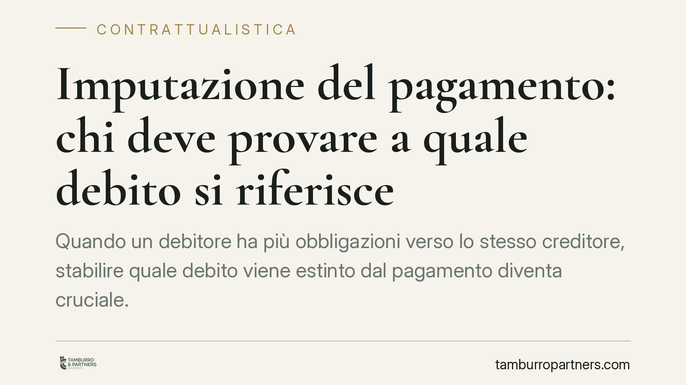

Imputazione del pagamento: chi deve provare a quale debito si riferisce
Quando un debitore ha più obbligazioni verso lo stesso creditore, stabilire quale debito viene estinto dal pagamento diventa cruciale. La Cassazione ribadisce che spetta al debitore indicare l'imputazione, mentre grava sul creditore l'onere di provare l'esistenza di altri debiti per contestare la destinazione della somma versata. Una regola che incide sulla gestione documentale dei rapporti commerciali continuativi.

Il problema pratico
Accade spesso nei rapporti commerciali continuativi: un fornitore vanta più crediti verso lo stesso cliente e riceve un versamento che non copre l'intera esposizione. A quale delle fatture aperte va imputata la somma? La questione non è teorica. Da essa dipende quale debito si estingue, quali interessi maturano e quale posizione resta scoperta.
La risposta si costruisce su due pilastri: le regole di imputazione del pagamento e la ripartizione dell'onere probatorio.
Inquadramento normativo
L'art. 1193 cod. civ. disciplina l'imputazione del pagamento quando esistono più debiti della stessa specie verso lo stesso creditore. Il primo comma attribuisce al debitore la facoltà di dichiarare, al momento del pagamento, quale debito intende soddisfare. È una scelta che spetta a chi paga e che va manifestata contestualmente al versamento.
In assenza di dichiarazione del debitore, il secondo comma detta criteri legali suppletivi: il pagamento si imputa al debito scaduto; tra più debiti scaduti, a quello meno garantito; tra debiti egualmente garantiti, al più oneroso; tra debiti egualmente onerosi, al più antico. Se questi criteri non risolvono, l'imputazione avviene proporzionalmente.
Sul piano probatorio interviene l'art. 2697 cod. civ.: chi vuol far valere un diritto in giudizio deve provare i fatti che ne costituiscono il fondamento. La Cassazione Civile, Sez. II, ha applicato questo principio alla materia: il debitore che afferma di aver estinto un determinato debito deve dimostrare l'avvenuto pagamento e l'imputazione. Il creditore che intende negare tale effetto, sostenendo che il versamento andava a coprire un debito diverso, deve provare l'esistenza degli altri debiti dedotti.
Cosa cambia per debitore e creditore
Per il debitore la regola è chiara: il momento per scegliere è quello del pagamento, non dopo. Chi salda genericamente, senza indicare la causale, rinuncia al controllo sull'imputazione e si espone all'applicazione dei criteri legali, che possono destinare la somma a un debito diverso da quello desiderato.
Per il creditore il rischio è speculare. Non basta affermare che il pagamento andava imputato a un debito più conveniente per la propria posizione. Occorre provare, documenti alla mano, che quel diverso debito esiste ed è esigibile. Un'affermazione priva di riscontro documentale non regge in giudizio.
Nel caso esaminato dalla giurisprudenza emerge anche il tema degli assegni postdatati. Vale la pena ricordare che l'assegno postdatato è irregolare rispetto alla funzione tipica del titolo, ma resta valido come mezzo di pagamento tra le parti e può costituire prova del versamento e della sua destinazione.
Il valore della documentazione
Il vero discrimine è documentale. Una causale precisa sul bonifico, un'annotazione sulla ricevuta, una quietanza che indica la fattura estinta: sono questi elementi a decidere l'esito di un'eventuale contestazione. In loro assenza, la ricostruzione diventa incerta e si affida ai criteri legali o alla capacità delle parti di produrre prove documentali sull'esistenza degli altri rapporti.
Cosa fare in concreto
- Indica sempre la causale nel pagamento: numero di fattura, data, riferimento contrattuale. Il momento utile è quello del versamento.
- Conserva le quietanze e ogni documento che colleghi la somma pagata al debito estinto, anche per gli anni successivi.
- Se sei creditore, mantieni una contabilità ordinata di tutti i crediti verso ciascun cliente: solo così potrai provare l'esistenza di debiti ulteriori.
- Verifica la coerenza tra causale del pagamento e imputazione contabile: discordanze possono generare contenzioso.
- Prima di accettare pagamenti parziali su posizioni multiple, chiarisci per iscritto a quale debito vengono destinati.
Consigliamo di formalizzare l'imputazione in ogni rapporto continuativo, per evitare che una scelta importante venga rimessa a criteri legali o a valutazioni successive.
---
Contributo informativo a cura di Tamburro & Partners - Avv. Giuseppe Tamburro. Non costituisce parere legale.
Ogni contratto ha il suo equilibrio.
Se vuoi una revisione delle clausole o una redazione su misura, scrivi allo studio. Ti rispondiamo entro un giorno lavorativo.